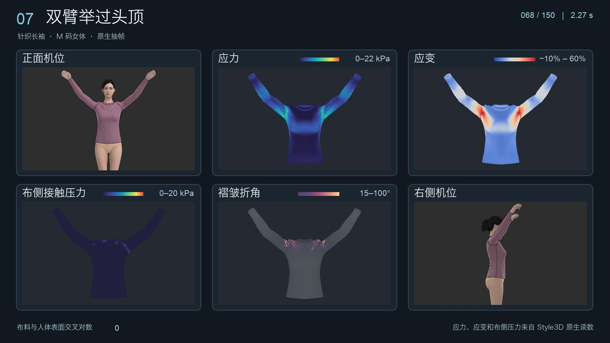

十项动作修复复验
FreeSewing M 码女式针织长袖。十项均录制完整布料轨，先核对统计，再复看正面、背面和右侧。113 个抽查帧的覆盖告警为 0。
- 动作通过
- 10 / 10
- 抽查帧
- 113
- 表面交叉
- 0
修复后五图视频
约 76 秒。同步展示上身外观、应力、应变、布侧接触压力和褶皱折角，并附右侧机位。下表可跳到对应动作。
十项动作检查结果
| 动作 | 抽查帧 | 交叉峰值（修复前 → 后） | 视频起点 | 目视证据 |
|---|---|---|---|---|
| 01 自然站立 | 5 | 10 → 0 | 0.0 秒 | 三视图 |
| 02 直线走秀 | 24 | 882 → 0 | 3.6 秒 | 三视图 |
| 03 T 台走秀 | 27 | 1,252 → 0 | 19.1 秒 | 三视图 |
| 04 转身走回 | 13 | 3,907 → 0 | 36.5 秒 | 三视图 |
| 05 双臂前伸 | 7 | 12 → 0 | 45.1 秒 | 三视图 |
| 06 双臂侧举 | 7 | 19 → 0 | 50.0 秒 | 三视图 |
| 07 双臂举过头顶 | 7 | 1,226 → 0 | 54.9 秒 | 三视图 |
| 08 坐下再起身 | 7 | 4,128 → 0 | 59.8 秒 | 三视图 |
| 09 交替抬脚上台阶 | 9 | 171 → 0 | 64.6 秒 | 三视图 |
| 10 左右转体 | 7 | 1,054 → 0 | 70.8 秒 | 三视图 |


线稿、上身与五图


